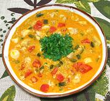

|
Brazilian Fish StewBrazil - Moqueca de Peixe | ||||
| Makes: Effort: Sched: DoAhead: |
6 cups *** 5 hrs Yes |
This Fish Stew from Bahia in northern Brazil is lighter than the very intense Vatapás of the Afro-Brazilian cuisine, but is certainly a good main dish stew, served with rice. | |||
|
1-1/2 ------- 1 3 2 1/4 2 2 2 ------- 3 1 2 1/4 7 7 6 3 ------- 1 3 1-1/2 1 2 1/2 1/3 |
# --- oz T in cl T T --- oz cl in oz oz oz oz --- T T c c T T t |
Fish fillet (1) -- Marinade Scallion Onion Cilantro Ginger Garlic Dendê Oil (2) Olive Oil ExtV -- Vegies Onion Scallion Garlic Ginger root Bell Pepper green Bell Pepper yellow Tomatoes Hearts of Palm -- Run Lemon Juice Dendê Oil Fish Stock (3) Coconut Milk Tomato Paste Salt Pepper, black |
This recipe can be made hours ahead up to adding the fish, or a finished soup can be reheated easily if the chosen fish holds up fairly well to wet cooking. Marinade - (3-1/2 hrs - 20 min work)
|
amf_fshstw1 170907 var - www.clovegarden.com
©Andrew Grygus - agryg@aaxnet.com - Linking to and
non-commercial use of this page is permitted.